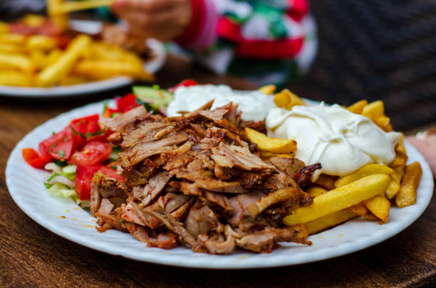

Shawarma is awesome
Indulge in the rich, mouthwatering experience of shawarma—succulent, marinated meat roasted to perfection, wrapped in warm pita, and paired with fresh, flavorful toppings. Whether you're a seasoned fan or a first-timer, every bite promises an unforgettable taste adventure!

Most popular shawarma types

The classic version, popular in Lebanon, Syria, and Jordan, uses marinated chicken, beef, or lamb, served in pita with garlic sauce, pickles, and tahini.

Greek Gyro: Greece's take on shawarma, made with pork or chicken, wrapped in soft pita, and served with tomatoes, onions, and a generous helping of tzatziki sauce.
Döner Kebab: A Turkish favorite, featuring spiced lamb or beef, slow-roasted on a vertical spit and served in bread or lavash with yogurt, sumac onions, and tomato-based sauces.
Falafel: A crispy, golden-brown vegetarian delight made from ground chickpeas and herbs, served in a wrap or on a plate with tahini, fresh veggies, and pita bread.

Plate Shawarma: A hearty, deconstructed version of shawarma served on a plate with sliced meat, rice or fries, fresh salad, pickles, and a side of creamy garlic sauce or hummus.
"You can't buy happiness, but you can buy shawarma. Close enough."
-Albert Einstein
Time to sign up
Sign up by clicking the button to the right!